Back to work
DahMakan
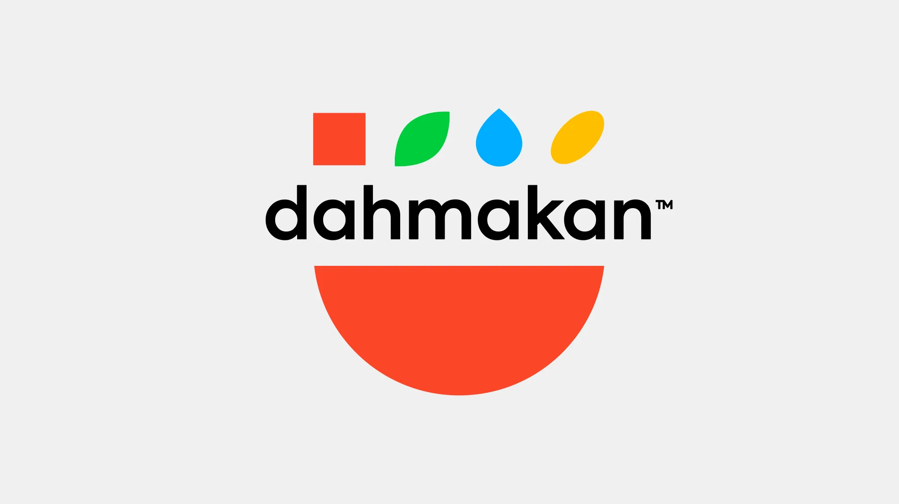
A food delivery identity shaped around familiar meals, fast recognition, and a simple pocket-inspired brand system.
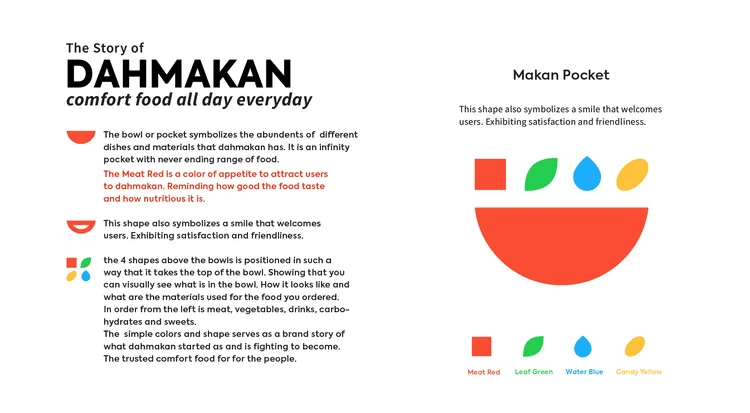
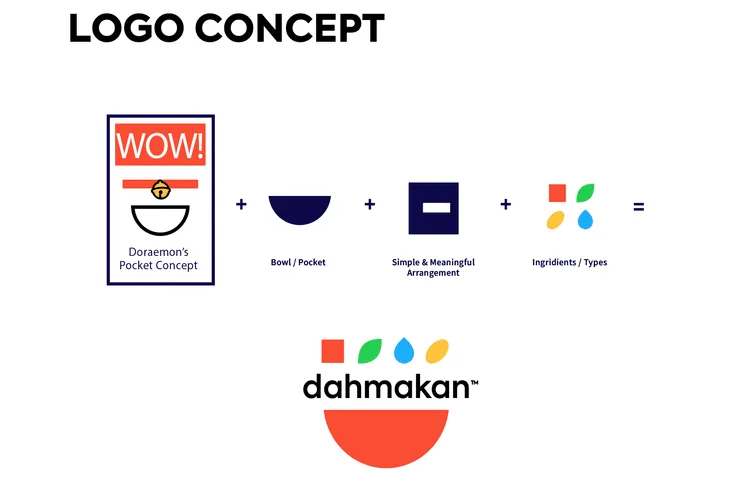
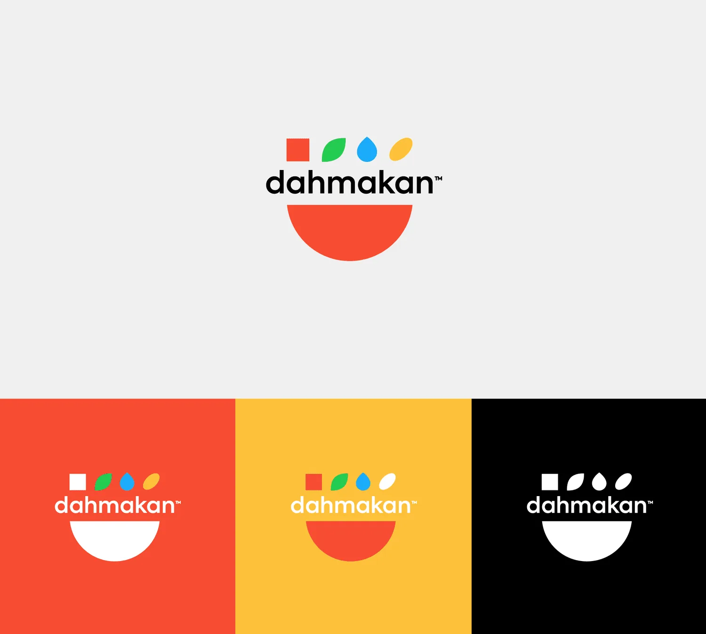
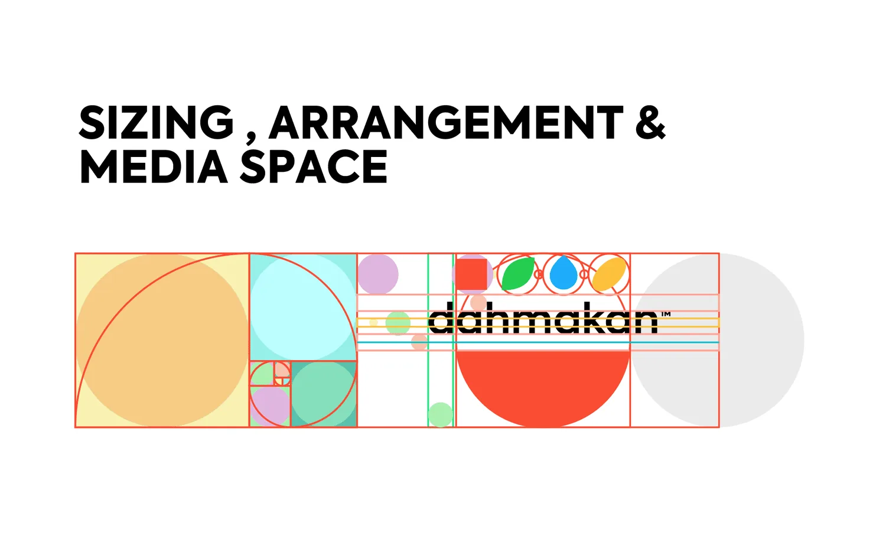
The system stays bright and direct, giving food, delivery, and promotional touchpoints a consistent visual shorthand.
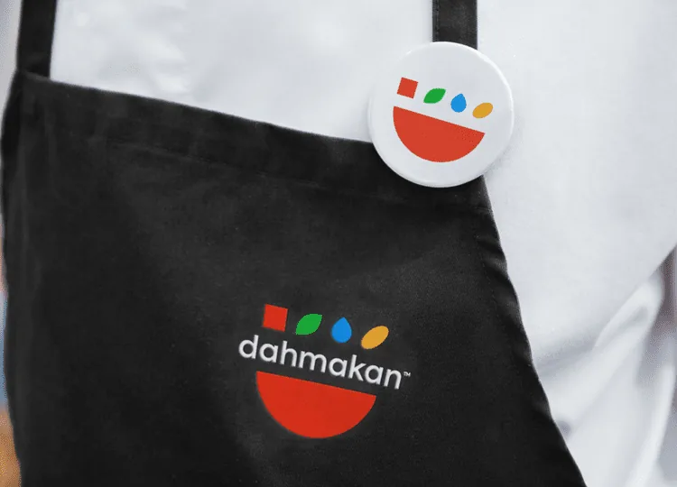
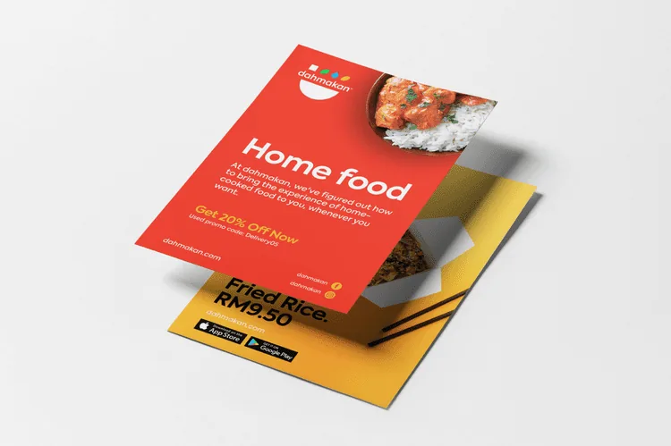
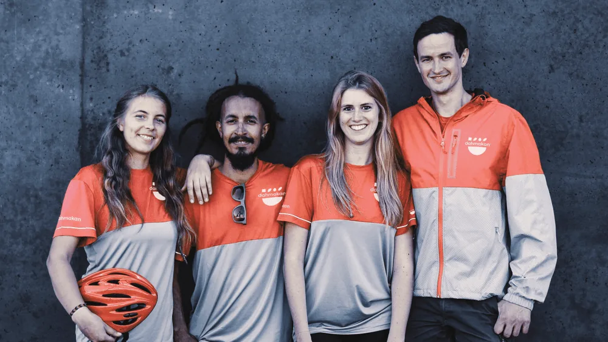
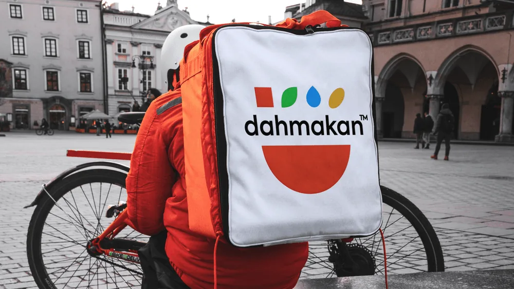
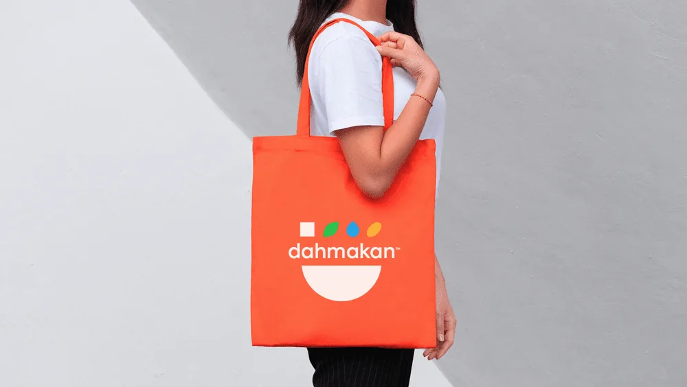
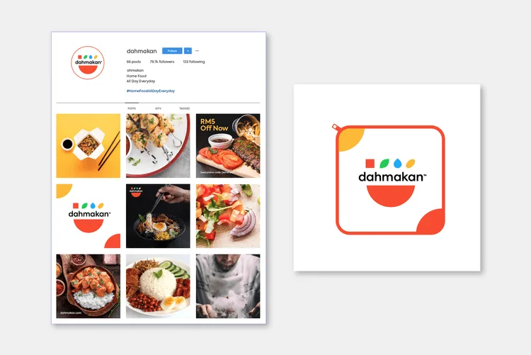
From website menus to food campaigns, the identity keeps the meal experience energetic, practical, and easy to remember.
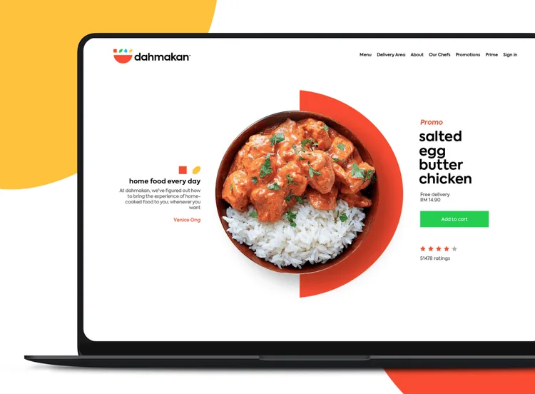
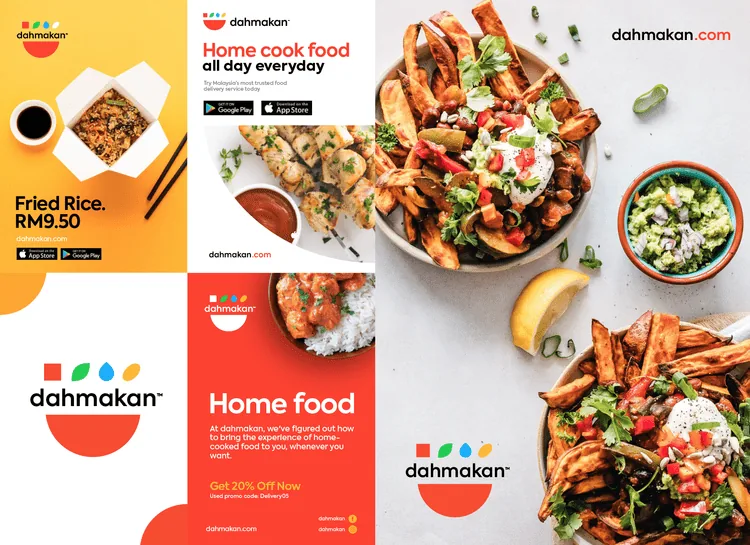